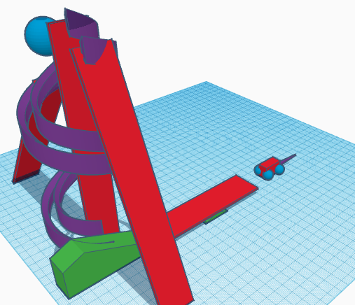
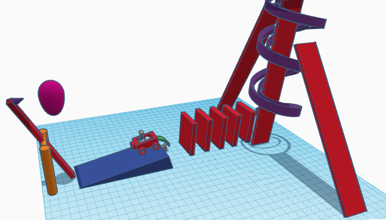
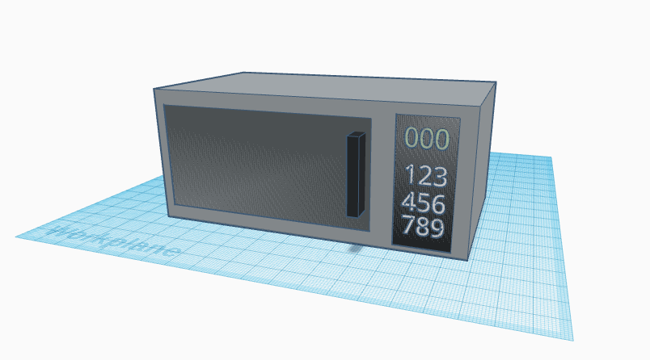
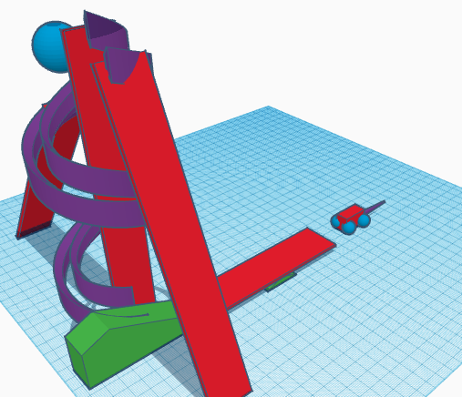
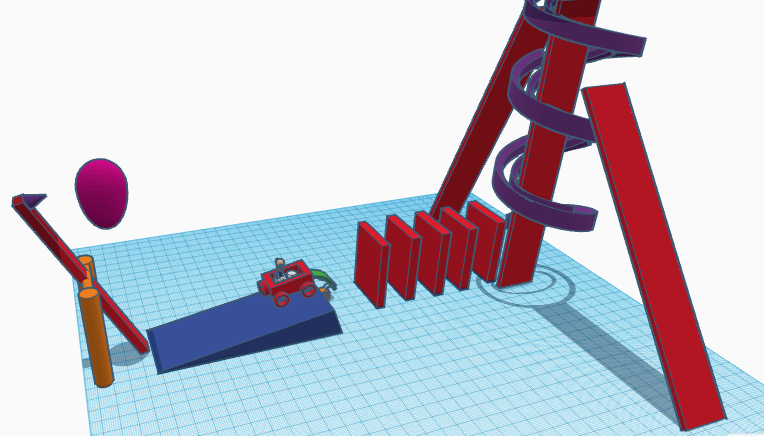

 


8/19/2022 Today I learned how to make a simple website with text and how to change the text
9/2/2022 This week we leanred about safety, about the Rube Goldberg machine, Machnical engineering, got introduced to tinkerCad and learned how to use the basics, and made things like our own rube goldberg machine. We also did a challeng to create a home appliance in TinkerCad, i made a microwave.I enjoyed using tinkercad but it was also a challenge.
9/8/2022 This week we just did ThinkerCad to finalize our desighn and got into our rubegoldberg machine groups and made a group desighn
9/8/2022
All of this week we worked on our real, cardboard rube Goldberg machine. On challege day we had to make a paper boat that can carry the heaviest object for the longest time on water.
Boat PDF
9/26/2022
We worked on finshing our RGB machines and did our final run on friday.


9/30/2022 The week we made a model of a prostetic for an animal. I made a prostetic leg for a lion with claws and joints
10/7/2022 This week we took apart a computer and labeled the components of a computer on a work sheet, then we put the computer back together.
10/24/2022 This week we worked on our bottle rockets and lunched them. Most rockets were simple with a few that werent. ALmost all the rockets went backwards, probaboly due to the areodynamics.
11/4/2022 This week we started our electrical engineering unit. We started by learning the basics like volts, ohms, amps, and current. After we learned that we started to make our own circuts in tinkerCad.
11/10/2022 This week we started making real circuits with arduinos. We made three circuits with our partners and filled out a worksheet by finding the volts and resitance with a multimeter. On challenge day we had to convince Mr. Poole if counting to 1,000,000 is easieir or taking a math class for one year.
12/2/2022 This week we learned about civil engineering is a type of engineering that deals with construction. We were given a project to make a brdige out of Spaghetti that holds the most weight.